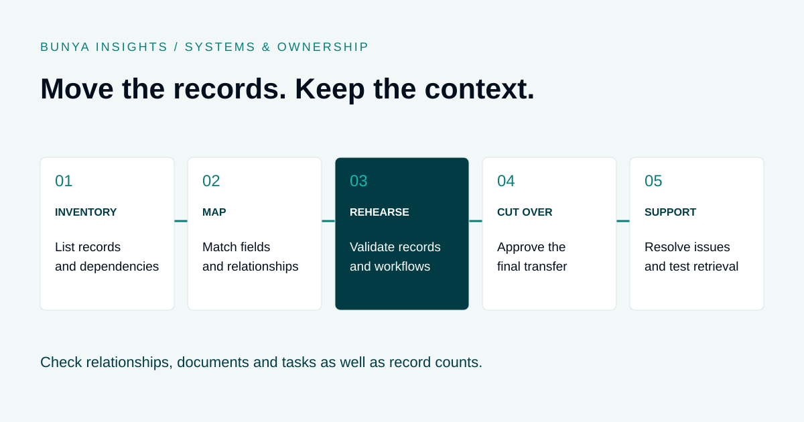

Systems & ownership
CRM Data Migration for Financial Advice Firms: A Practical Checklist
Move the records, preserve the context and keep the work moving.
THE SHORT ANSWER
A CRM migration for a financial advice firm needs an inventory of records and dependencies, agreed mapping rules, a tested sample transfer and a controlled cutover. Validate client relationships, documents, permissions and outstanding work as well as record counts. Agree how historical information will remain accessible before retiring the old system.

Start with what the firm needs to keep
A CRM migration moves more than contact details. An advice firm may rely on household relationships, entities, client notes, documents, service records, open tasks and links to other systems. The first job is to decide what the new environment must preserve and what will remain accessible elsewhere.
Assign a business owner to each record type. Ask that person to show how the team uses it today, including exceptions. A field that looks unused may drive a report; an old document link may be the route to a historical advice record.
Moving records also does not reproduce the old system’s modelling, research or integrations. If you are evaluating that change, use the Bunya vs Xplan comparison alongside the data plan.
Build a migration inventory
For each item, record the source, owner, export method, destination, transformation rules and acceptance check. Include items that will be retained in an archive, with a named route for retrieving them.
| Record type | What to map | What to prove |
|---|---|---|
| Clients and entities | Identifiers, contact fields, household and entity relationships. | The right people remain connected to the right records. |
| Notes and history | Content, original author, date and source reference. | History remains readable and attributable. |
| Documents | Files, metadata, versions where available, client links and access. | Authorised staff can open the correct document. |
| Services and tasks | Status, responsibility, due dates and supporting records. | Outstanding work is visible and correctly assigned. |
| Connected systems | External identifiers, feeds, reports and integration dependencies. | The agreed connections still work after transition. |
Agree mapping and cleanup rules
Confirm export rights, formats, supplier assistance and any charges before setting a date. Obtain an authorised sample early enough to expose missing fields or export limitations.
Map by meaning, not just by matching field names. “Active” could mean an active client, an active service agreement or simply a record that has not been archived. Document the source meaning and the destination rule.
- Keep a source-to-destination identifier register so records can be traced.
- Decide how blanks, unknown values, date formats and custom categories are handled.
- Flag suspected duplicates for review; do not merge people solely because they share a name or email address.
- Record approved transformations and preserve the original source where the agreed retention approach requires it.
- Separate a deliberate cleanup decision from an import error, with an owner for each exception.
AI may assist with suggesting mappings or identifying potential duplicates. Test those suggestions and approve the rules before applying them to client records.
Worked example: the contacts arrived, but the work did not
Illustrative example using fictional information. A trial import transfers 240 contact records. The count matches the export, so the transfer initially appears complete. A team member then opens a client record and finds that its trust relationship is missing, an advice document points to the old system and a review task has no owner.
The team adds three acceptance checks: verify relationship links, open documents using an ordinary staff account, and reconcile outstanding tasks by owner and status. It fixes the mapping and repeats the trial on an authorised sample before the final migration.
The lesson is practical: matching totals helps identify missing records, but it cannot prove that those records are usable.
Validate records and real workflows
Agree acceptance criteria before the rehearsal. Combine automated reconciliation with representative manual checks, including unusual cases such as linked entities, inactive clients and records with a long history.
- Reconcile the population. Compare counts by record type and status. Account for deliberate exclusions, merges and rejected records.
- Check meaning. Verify important values, dates, relationship links and preserved source references.
- Open the evidence. Test documents and notes from the destination record, not just from an import report.
- Test access. Check both what staff can see and what they should not be able to see.
- Run a working scenario. Find a client, prepare a review, update a task and retrieve a historical record using the intended staff roles.
- Resolve exceptions. Track each issue to an owner and record the decision to fix, defer or exclude it. Define which defects block launch.
For the review scenario, use the client review workflow checklist. For historical evidence, see the advice file review checklist.
Plan the cutover and fallback
A final export is a point in time. Decide how you will capture changes made after it, and which system staff should use during the transition. Otherwise a task completed in the old system may appear outstanding in the new one.
- Before: agree the rehearsal outcome, final export window, change freeze or change-capture method, staff training and support contact.
- At cutover: reconcile the final transfer, apply agreed permissions and run the critical workflow checks.
- Go or pause: name the person authorised to approve launch and the unresolved issues that require a delay.
- If something fails: define the fallback, including how work entered in either system will be reconciled. Reopening the old system alone does not undo new records.
- After: monitor missing records, access issues and unassigned work; resolve them through a visible issue log.
Do not end access to the old environment until the agreed archive, retrieval and contractual arrangements have been checked. Parallel access and support may affect cost.
Protect exports and plan historical access
The OAIC’s APP 11 guidance explains security obligations for entities covered by the Australian Privacy Principles, including protection against unauthorised access, modification and disclosure. It also addresses destruction or de-identification when information is no longer needed, subject to exceptions such as legal retention requirements.
For the migration, agree who can access exports, where working copies are stored, how they are transferred and when temporary copies are removed. Use an approved transfer channel and controlled access rather than circulating spreadsheets informally.
Confirm retention and retrieval requirements with the people responsible for your firm’s obligations. An inactive client is not automatically a record to delete. A retained archive needs an access owner and a tested way to find the required information.
Questions to ask before signing
Can everything move from our existing CRM?
That depends on export access, available formats and the destination data model. Ask for a written inventory of what will migrate, what will remain in an archive and what cannot be transferred.
How long does CRM migration take?
The schedule depends on data quality, document volume, custom fields, supplier access, integrations and testing. Request a scoped timetable with a rehearsal and acceptance stage rather than relying on a generic estimate.
What should a migration quote include?
Check discovery, export assistance, mapping, cleanup, document handling, trial runs, validation, cutover support and post-launch corrections. Identify exclusions and the cost of retaining access to the old system.
Should we clean the data before migrating?
Resolve known quality problems where practical, using agreed rules. Preserve traceability and avoid deleting or merging records without checking their purpose and retention requirements.
Does Bunya include migration from Xplan or another CRM?
Migration scope must be assessed during the Blueprint. Confirm the source system, export rights, record types, document handling, retained tools and acceptance criteria. Do not assume a standard connector transfers every record or feature.
Bring a clear inventory to the Blueprint
Start with a list of systems, record types, known quality issues and three workflows the firm must continue running. Use fictional or approved sample information initially, then agree a secure process for any detailed assessment.
Explore how the Bunya build process works or read the build-versus-buy guide to consider the responsibilities around your next system.
Practical planning guidance, not a prescribed migration or legal checklist. OAIC source checked 20 September 2026; adapt the plan to your firm’s contractual, privacy and record-keeping requirements.